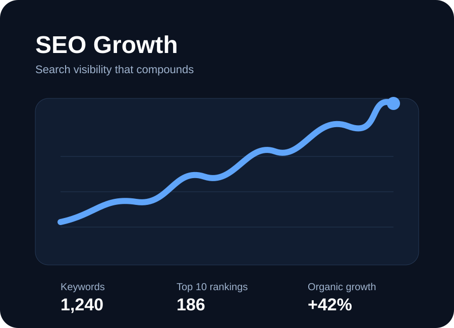

⌁
Search & SEO
Technical SEO, content architecture, keyword strategy and authority building designed around qualified demand.
Organic growthA performance-first digital marketing system for brands that want more than clicks — combining strategy, creative, acquisition and analytics into measurable growth.

Munikumar is a digital marketing growth studio for businesses that need stronger visibility, qualified demand and measurable acquisition.
This page was reviewed and updated October 5, 2026. Structured data follows Schema.org vocabulary and Google Search documentation.
We connect the pieces of digital marketing into one growth system — from first impression to conversion and retention.
Technical SEO, content architecture, keyword strategy and authority building designed around qualified demand.
Organic growthSearch and social campaigns engineered around CAC, ROAS, conversion quality and scalable testing.
Performance mediaPlatform-native creative systems that earn attention, build trust and move audiences toward action.
Creative growthLanding pages, offers, messaging and CRO experiments that turn more of your existing traffic into pipeline.
CROClean dashboards and decision-ready reporting that show what is working, what is leaking and what to scale.
MeasurementA prioritized roadmap connecting audience, positioning, channels, creative and commercial outcomes.
Go-to-marketReplace vanity metrics with the numbers that tell you whether the growth engine is actually getting stronger.

Illustrative efficiency improvement through creative and audience testing.
Illustrative increase in qualified engagement after content-system redesign.
A simple operating rhythm built to reduce wasted spend and compound what works.
Audit channels, audience, positioning, funnel and measurement.
Prioritize offers, messages, channels and conversion paths.
Launch creative and acquisition experiments with clear hypotheses.
Shift budget and effort toward the signals producing business value.
The strongest marketing sits between brand and numbers. We make the creative compelling enough to earn attention and the measurement rigorous enough to know what happens next.
Short answers first, then deeper resources for readers who want the details.
SEO improves discovery and understanding in search. AEO emphasizes direct answers to questions. GEO focuses on making entities, expertise, evidence and content easier for generative systems to understand.
It is for businesses and teams that need stronger search visibility, qualified demand, better conversion or clearer marketing measurement.
Start with the commercial constraint: SEO for durable organic demand, paid acquisition for controlled testing, social and content for attention and trust, and CRO when traffic is not converting.
Use qualified traffic, conversion rate, acquisition cost, revenue or pipeline, retention and channel efficiency rather than vanity metrics alone.
Tell me where you are today, what you are trying to grow, and what is getting in the way. We’ll turn it into a focused marketing roadmap.